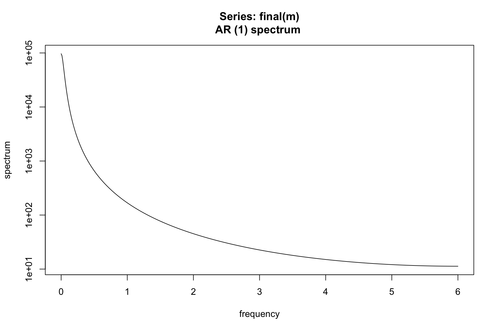
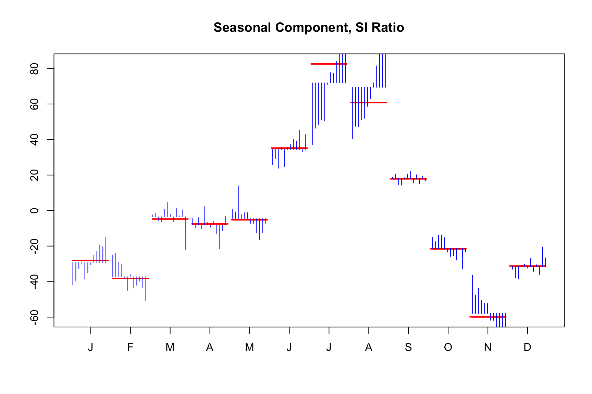

m <- seas(AirPassengers)
summary(m)
#>
#> Call:
#> seas(x = AirPassengers)
#>
#> Coefficients:
#> Estimate Std. Error z value Pr(>|z|)
#> Weekday -0.0029497 0.0005232 -5.638 1.72e-08 ***
#> Easter[1] 0.0177674 0.0071580 2.482 0.0131 *
#> AO1951.May 0.1001558 0.0204387 4.900 9.57e-07 ***
#> MA-Nonseasonal-01 0.1156204 0.0858588 1.347 0.1781
#> MA-Seasonal-12 0.4973600 0.0774677 6.420 1.36e-10 ***
#> ---
#> Signif. codes: 0 '***' 0.001 '**' 0.01 '*' 0.05 '.' 0.1 ' ' 1
#>
#> SEATS adj. ARIMA: (0 1 1)(0 1 1) Obs.: 144 Transform: log
#> AICc: 947.3, BIC: 963.9 QS (no seasonality in final): 0
#> Box-Ljung (no autocorr.): 26.65 Shapiro (normality): 0.990815 Quality measures
What makes a good seasonal adjustment? Different users will have varying definitions of ‘quality’ based on their specific needs and the audiences they serve. For example, a federal statistical agency, who is concerned about the users of their seasonal adjustments, may have very different definition of quality compared with a single analyst who is interested in only long-term trend.
Regardless of the end goal, some criteria are valid most of the time. A good seasonal adjustment should, most importantly, have no residual seasonality. It should also, be free of calendar effects, exhibit stability and smoothness, and have no significant trading day effects.
This chapter will be broken up into relevant pieces that construct a good seasonal adjustment. Yet, it is the sum of these parts that ultimately comprise a quality adjustment and it is often difficult to completely break them up in a vacuum.
15.1 Summary Statistics
The summary of the model gives a glance of a seasonal adjustment process and is a good starting point for the evaluation whether a model is good or bad:
The summary gives an overview of the adjustment model and provides diagnostics - we briefly went through its elements in Chapter 2.
In the lower part, the summary of the adjustment model shows various quality measures:
- The AICc and BIC information criterion (we use them for model comparison)
As well as the following statistics:
- the QS Statistic (do we have seasonality in the final series?),
- the Box-Ljung (do we auto-correlation in the residuals? Is our ARIMA model appropriate?),
- and the Shapiro statistic (are the residuals normally-distributed? Is our ARIMA model appropriate?).
None of the three statistics shows any significance (indicated by one or several stars), which is a good sign. By now we know that AirPassengers is a series that is easy to adjust and that the automated procedures of X-13 work well on this series, so this should not come as a surprise.
At this point in the text we introduce an intentionally poor seasonal adjustment model for the AirPassengers series. This will be a useful tool to understand some of the basic concepts and a contrast when trying to understand the output of the X-13 program and the seas() function. Our poor seasonal adjustment will have a very short seasonal filter and a mispecified ARIMA model.
m_bad = seas(AirPassengers, x11.seasonalma = "s3x3", arima.model = "(0 0 1)(0 0 0)")
summary(m_bad)
#>
#> Call:
#> seas(x = AirPassengers, x11.seasonalma = "s3x3", arima.model = "(0 0 1)(0 0 0)")
#>
#> Coefficients:
#> Estimate Std. Error z value Pr(>|z|)
#> LS1952.Jun 76.00843 11.59453 6.556 5.54e-11 ***
#> LS1955.Mar 70.06467 14.15525 4.950 7.43e-07 ***
#> LS1956.Jun 69.88725 14.16298 4.935 8.04e-07 ***
#> LS1959.Mar 92.30970 13.68401 6.746 1.52e-11 ***
#> AO1960.Nov 385.39110 29.95826 12.864 < 2e-16 ***
#> LS1960.Nov -459.92364 11.29136 -40.732 < 2e-16 ***
#> AO1960.Dec 432.00000 38.37792 11.256 < 2e-16 ***
#> MA-Nonseasonal-01 -0.82960 0.04724 -17.562 < 2e-16 ***
#> ---
#> Signif. codes: 0 '***' 0.001 '**' 0.01 '*' 0.05 '.' 0.1 ' ' 1
#>
#> X11 adj. ARIMA: (0 0 1)(0 0 0) Obs.: 144 Transform: none
#> AICc: 1404, BIC: 1430 QS (no seasonality in final):11.21 **
#> Box-Ljung (no autocorr.): 244.9 *** Shapiro (normality): 0.9769 *When we compare the bottom half of the summary output to the automatic model above, which we know fits well, we can see stars next to the QS (indicating residual seasonality), the Box-Ljung (indicating autocorrelation left in the model residuals) and the Shapiro normality test (indicating non-normality of the model residuals). Usually, it makes sense to look at the statics if the summary indicates significance on any of them.
We will already discussed the role of information criterion and the statistics in more detail below. We also can see the AICc value is significantly higher. This tells us the model above is a better fit.
In addition, looking the estimated seasonal component gives you a good understanding on what actually happened during seasonal adjustment. We will start with visually inspecting the seasonal component of a seasonal adjustment model.
15.2 Residual Seasonality
The QS statistic in the summary has not shown any significance, meaning the seasonally adjusted series show no seasonality. This is closely related to the concept of residual seasonality. Residual seasonality plays a crucial role in determining the quality of a seasonal adjustment.
Residual seasonality refers to the presence of remaining seasonal patterns or fluctuations in the seasonally adjusted series or its residuals. It indicates that the seasonal adjustment may not have fully removed all the seasonal effects from the data. If residual seasonality is present in the adjusted series, it can lead to biased or misleading analysis and forecasts.
It implies that there are still systematic patterns or cycles left in the data, which can hinder accurate interpretation and decision-making. There are many ways to test for residual seasonality. Essentially, this mimics what we learned in Chapter 12 but now applied to the final seasonally adjusted series.
Three prominent ones are:
- The QS-statistic,
- Visual inspection of the spectrum,
- or an F-test for residual seasonality
Additionally, (Findley, Lytras and Mcelroy 2017) find the most diagnostics must be applied to a subspan of the seasonally adjusted series for best residual seasonality detection. Keep this in mind when doing any analysis of your final seasonal adjustment.
15.2.1 QS statistic
We have already seen the that the QS statistic in model summary is not significant, meaning there is no residual seasonality in the series.
The QS statistics check for positive autocorrelation at the seasonal lags. The null hypothesis is that the autocorrelation is zero, indicating no seasonal autocorrelation. Hence, a small p-value indicates residual seasonality.
Let \(\hat{\gamma}(h)\) be the estimated autocorrelation function of a differenced time series. The QS statistic for a monthly time series is \[ QS = n(n+2)\left(\frac{\hat{\gamma}(12)^2}{n - 12} + \frac{\hat{\gamma}(24)^2}{n - 24}\right) \] For a quarterly series replace the 12s and 24s with 4s and 8s. The value QS is approximately chi-squared with 2 degrees of freedom.
The seasonal package provides functionality to look at the QS values of various series. We will breakdown what all these tests and p-values are
qs(m)
#> qs p-val
#> qsori 167.64858 0.0000
#> qsorievadj 203.07731 0.0000
#> qsrsd 0.00000 1.0000
#> qssadj 0.00000 1.0000
#> qssadjevadj 0.00000 1.0000
#> qsirr 0.00000 1.0000
#> qsirrevadj 0.00000 1.0000
#> qssori 115.08988 0.0000
#> qssorievadj 135.11320 0.0000
#> qssrsd 0.36904 0.8315
#> qsssadj 0.00000 1.0000
#> qsssadjevadj 0.00000 1.0000
#> qssirr 0.00000 1.0000
#> qssirrevadj 0.00000 1.0000In the output table we see 14 rows. The top 7 rows correspond to the QS statistic
Original series
Original series, adjusted for extreme values
Model residuals
Seasonally adjusted series
Seasonally adjusted series, adjusted for extreme values
Irregular series
Irregular series, adjusted for extreme values
The next seven rows are simply the exact same statistics calculated on a (possibly) shorter span of the data. The default span used for the second 7 QS statistics is set to be the same as the spectrum uses, 96 observations or 8 years in a monthly series.
The value shown in the summary output of the model correspond to the 4th row. If this value does not show any significance, there is usually no significance in the QS statistic of the irregular series.
15.2.2 Frequency Domain (optional): Spectrum
Another way to look at residual seasonality is to look at the spectrum.
We start with visual inspection of the spectrum of a series. For those unfamiliar with spectral analysis of a time series, the following discussion is intended to be accessible to all trying to perform seasonal adjustment. Hence, we take some liberties with language an interpretation in an effort to make the discussion accessible. For example, we use the term spectrum to refer to the theoretical construct as well as the estimated periodogram.
We note here that we will use a parametric AR representation to estimate the spectrum of a process. This is the easiest and most straight forward way to get smooth yet sensible empirical spectral estimates for the everyday user. Peaks in the spectrum indicate significant influence to your series of a sin/cos curve of the corresponding frequency. For example, looking at the spectrum of the AirPassengers series we see large peaks at frequencies 1/12, 2/12, 3/12, …
spec.ar(AirPassengers, order = 13)
We know that X-11 with automatic modeling and automatic filter identification performs a good seasonal adjustment. If we look at the spectrum of the seasonally adjusted series, the peaks have been removed.

Let’s intentionally perform a poor seasonal adjustment and see the effect on the spectrum of the seasonally adjusted series.
library(seasonal)
m <- seas(AirPassengers, transform.function = "none", x11 = "", x11.seasonalma = 'stable')
spec.ar(final(m))
Here we see peaks remaining the the final seasonal adjustment. This is a clear indication of lack of quality and something needs to be done to improve the adjustment.
When attempting to eliminate persistent peaks in the spectrum, several strategies can be employed.
First, consider adjusting the model span, particularly when there are indications of changing patterns. Furthermore, it is essential to carefully examine for any missed outliers and thoroughly review instances that are considered “almost” outliers. Additionally, scrutinize the seasonal filters and sigma limits in X-11 or the model in SEATS to ensure they are appropriately set.
Exploring different estimations of the spectrum can also provide insights into potential solutions. Here we used the spec.ar function which utilizes an AIC test to find an appropriate AR(p) model for the series and plots the associated spectrum. This results in a smooth function as apposed to say, spec.pgram which will be much rougher.
It is important to acknowledge that sometimes these peaks may be spurious, making it challenging to ascertain their significance. Always try to eliminate peaks at 1/12, 2/12, 3/12, 4/12, or TD 0.348 but be aware that not every situation lends itself to a clear-cut answer.
When employing X-11 seasonal adjustment, it is crucial to consider that peaks observed in the spectrum of the seasonally adjusted series or irregular component, these are more significance than peaks in the spectrum of the model residuals. In the case of indirect adjustments, it is advisable to prioritize the analysis of the seasonally adjusted series.
15.3 Model Appropriateness
Often a poor seasonal adjustment might be due to a poor fitting regARIMA model. The converse is not always true and does not always need to be rectified if the resulting seasonal adjustment is free of residual seasonality and passes other diagnostic test. Some diagnostics that can be used to test your regARIMA model are:
- t-tests on model coefficients (reported in the summary)
- Normality of residuals (reported in the summary as
Shapiro) - Sample autocorrelations and partial autocorrelations
- The Ljung-Box Q statistic
- A spectrum plot of regARIMA residuals
15.4 Stability and smoothness
We explore two related concepts and their associated specs. First, the stability of a seasonal adjustment which refers to its consistency and reliability over time. It assesses whether the model fits remain consistent as new data becomes available. Stability is important as large revisions are a hindrance in a production cycle of seasonal adjustment. Again, this is a good example of a situation where a user interested in only a single seasonal adjustment (will never adjust this series again) may not care to read this section.
The diagnostics provided in other chapters will more adequately aid them to produce a quality seasonal adjustment. However, for those that produce a seasonal adjustment, say monthly, stability is crucial for producing consistent and trustworthy data that can be used for analysis, decision-making, and forecasting. This is discussed in the following subsection.
Secondly, in the following chapter, we will discuss the history spec and revisions.
15.4.1 Monthplot
Visually inspecting the seasonal component makes sense almost any adjusmten process. We already looked at the monthplot function in Chapter 4.
monthplot(m)
The plot organizes the data by month. Observing the January (J) data, the blue bars represent the evolution of the detrended series from 1949 through 1960. The red bar shows the average seasonal component across these years, while the smooth red line indicates the seasonal component as calculated by the model.
The plot reveals a seasonal pattern where passenger numbers increase during summer months and decrease in winter. Over time, the intensity of the seasonal factors evolves, with the summer peak intensifying and the February and March peak diminishing.
Since the red lines are relatively smooth, the seasonal component is stable and predictable, as indicative for a good seasonal adjustment.
15.4.2 Sliding spans
The sliding span spec and diagnostics provide descriptive information about how seasonal adjustments and their month-to-month changes vary when the data span used to calculate them is changed systematically. Quoting the seminal paper (Findley, et al 1990) “A minimal requirement of the output of any smoothing or adjustment procedure is stability: Appending or deleting a small number of series values should not substantially change the smoothed values-otherwise, what reliable interpretation can they have?” When comparing two neighboring spans, the extent of their differences depends on whether one starts and ends a year later than the other. The default length of the data span is determined by the length of the seasonal filter used for the adjustment.
gantt
title Example of four 8-year spans starting in January 2000
dateFormat YYYY-MM-DD
section Full Data
First Span :a1, 2000-01-01, 2920d
Second Span :a2, 2001-01-01, 2920d
Third Span :a3, 2002-01-01, 2920d
Fourth Span :a4, 2003-01-01, 2920d
For series where all seasonally adjusted values are positive, two important sliding spans statistics, A(%) and MM(%), are viewed as follows. Let \(A_t^{(j)}\) be the seasonally adjusted value at time \(t\) calculated from data in span \(j\). Then A(%) denotes the percent of month such that: \[ \frac{\max_j A_t^{(j)} - \min_j A_t^{(j)}}{\min_j A_t^{(j)}} > .03 \] MM(%) denotes the percent of months the seasonally adjusted month-to-month percent change” is unstable, which is defined as: \[ \max_j \frac{A_t^{(j)}}{A_{t-1}^{(j)}} - \min_j \frac{A_t^{(j)}}{A_{t-1}^{(j)}} > 0.03 \]
The 0.03 on the right hand side comes from the default cutoff. Some of the other defaults are as follows
| Series | Default cutoff | spec option |
|---|---|---|
| Seasonal factors and seasonally adjusted series | 3% | cutseas = 3.0 |
| month-to-month and year-to-year change | 3% | cutchng = 3.0 |
| trading day factors | 2% | cuttd = 2.0 |
The recommendation provided in the X13 manual indicate A(%) > 15 is problematic and A(%) > 25 should not be used. MM(%) > 35 is problematic and MM(%) > 40 should not be used. Why a different ranges? Sometimes, the causes of high values in A(%) or MM(%) can be identified and determined to be relatively unproblematic. This is particularly true when the months with unstable adjustments or changes are predominantly concentrated in a well-known problematic period that occurred several years ago or in one or two specific calendar months each year. These months are typically acknowledged by all data users as potentially troublesome, such as winter months in datasets known to be highly sensitive to variations in winter weather conditions. The sliding spans output is instrumental in identifying such concentrations, making it effortless to spot these patterns.
m <- seas(AirPassengers,
slidingspans.numspans = 4)
# Seasonal Factors - Percentage of months flagged as unstable
SF <- udg(m, "s2.a.per")
row.names(SF) <-
c("Number of months flagged",
"Total number of months",
"Percent")
colnames(SF) <- "seasonal factors"
knitr::kable(SF)| seasonal factors | |
|---|---|
| Number of months flagged | 1.000 |
| Total number of months | 96.000 |
| Percent | 1.042 |
# Month-to-Month Changes in SA Series - Percentage of months flagged as unstable
M2M <- udg(m, "s2.d.per")
row.names(M2M) <-
c("Number of months flagged",
"Total number of months",
"Percent")
colnames(M2M) <- "Month-to-Month Changes in SA Series"
knitr::kable(M2M)| Month-to-Month Changes in SA Series | |
|---|---|
| Number of months flagged | 0 |
| Total number of months | 95 |
| Percent | 0 |
Let’s return to our example where we intentionally make a poor seasonal adjustment. Now we need to take a log transform which will certainly improve the results from the prior run.
m <-
seas(
AirPassengers,
transform.function = "log",
x11 = "",
x11.seasonalma = 'stable',
slidingspans.numspans = 4
)
# Seasonal Factors - Percentage of months flagged as unstable
SF <- udg(m, "s2.a.per")
row.names(SF) <-
c("Number of months flagged",
"Total number of months",
"Percent")
colnames(SF) <- "seasonal factors"
knitr::kable(SF)| seasonal factors | |
|---|---|
| Number of months flagged | 20.000 |
| Total number of months | 120.000 |
| Percent | 16.667 |
# Month-to-Month Changes in SA Series - Percentage of months flagged as unstable
M2M <- udg(m, "s2.d.per")
row.names(M2M) <-
c("Number of months flagged",
"Total number of months",
"Percent")
colnames(M2M) <- "Month-to-Month Changes in SA Series"
knitr::kable(M2M)| Month-to-Month Changes in SA Series | |
|---|---|
| Number of months flagged | 14.000 |
| Total number of months | 119.000 |
| Percent | 11.765 |
We see the A(%) value of 16.667 falls squarely in the problematic range. If we were to lower the cutoff threshold we could expect to get even more values being flagged yielding a higher percentage.
m <-
seas(
AirPassengers,
transform.function = "log",
x11 = "",
x11.seasonalma = 'stable',
slidingspans.numspans = 4,
slidingspans.cutseas = 2.0
)
# Seasonal Factors - Percentage of months flagged as unstable
SF <- udg(m, "s2.a.per")
row.names(SF) <-
c("Number of months flagged", "Total number of months", "Percent")
colnames(SF) <- "seasonal factors"
knitr::kable(SF)| seasonal factors | |
|---|---|
| Number of months flagged | 30 |
| Total number of months | 120 |
| Percent | 25 |
# Month-to-Month Changes in SA Series - Percentage of months flagged as unstable
M2M <- udg(m, "s2.d.per")
row.names(M2M) <-
c("Number of months flagged", "Total number of months", "Percent")
colnames(M2M) <- "Month-to-Month Changes in SA Series"
knitr::kable(M2M)| Month-to-Month Changes in SA Series | |
|---|---|
| Number of months flagged | 14.000 |
| Total number of months | 119.000 |
| Percent | 11.765 |
We can also examine the series provided to us
old_sa <- seas(
x = old,
transform.function = "log",
regression.aictest = NULL,
outlier = NULL,
arima.model = "(1 1 1)(0 1 1)",
x11 = "",
regression.variables = "ls2008.4",
slidingspans = ""
)
auto_sa <- seas(
x = old,
x11 = "",
slidingspans = ""
)
SF <- udg(old_sa, "s2.a.per") |> cbind(udg(auto_sa, "s2.a.per"))
row.names(SF) <- c("Number of months flagged", "Total number of months", "Percent")
colnames(SF) <- c("old_sa", "auto_sa")
knitr::kable(SF, caption = "Seasonal Factors")| old_sa | auto_sa | |
|---|---|---|
| Number of months flagged | 3.000 | 3.000 |
| Total number of months | 39.000 | 39.000 |
| Percent | 7.692 | 7.692 |
# Month-to-Month Changes in SA Series - Percentage of months flagged as unstable
M2M <- udg(old_sa, "s2.d.per") |> cbind(udg(auto_sa, "s2.a.per"))
row.names(M2M) <- c("Number of months flagged", "Total number of months", "Percent")
colnames(M2M) <- c("old_sa", "auto_sa")
knitr::kable(M2M, caption = "Month-to-Month Changes in SA Series")| old_sa | auto_sa | |
|---|---|---|
| Number of months flagged | 6.000 | 3.000 |
| Total number of months | 38.000 | 39.000 |
| Percent | 15.789 | 7.692 |
Some overall guidance for using modifications to a failing sliding span diagnostic can be summarized as follows:
- Try raising X-11 sigma limits
- Look at regARIMA model
- Don’t use sliding spans to choose seasonal filters as they tend to favor longer filters.
15.5 Exercises
Exercises
-
Using SARIMA(1 1 0)(1 1 0) model for the
AirPassengersseries- Perform seasonal adjustment on
AirPassengersseries using the X-11 method and specify SARIMA(1, 1, 0)(1, 1, 0) model. - Does the QS diagnostic indicate residual seasonality?
- Perform seasonal adjustment on
-
Stability and smoothness
- Perform seasonal adjustment on
AirPassengersseries using the X-11 method and specify SARIMA(1, 1, 0)(1, 1, 0) model. - Which seasonal adjustment is smoother? Use the monthplot and sliding spans to decide.
- Perform seasonal adjustment on
-
Compare SARIMA(1 1 0)(1 1 0) to airline model
- Perform seasonal adjustment on
AirPassengersseries using the X-11 method and specify SARIMA(1, 1, 0)(1, 1, 0) model. - Perform seasonal adjustment on
AirPassengersseries using the X-11 method and specify SARIMA(0, 1, 1)(0, 1, 1) model. - Describe the differences observed.
- Use statistical diagnotics listed in Section 15.3 to compare the model fits.
- Perform seasonal adjustment on